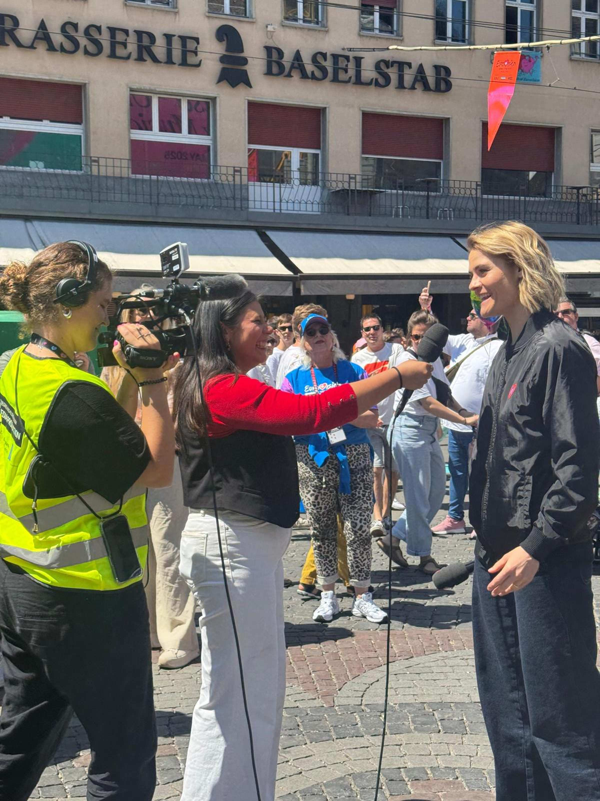
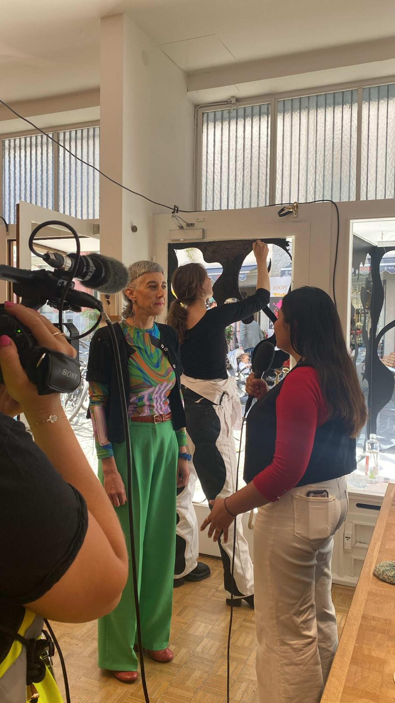
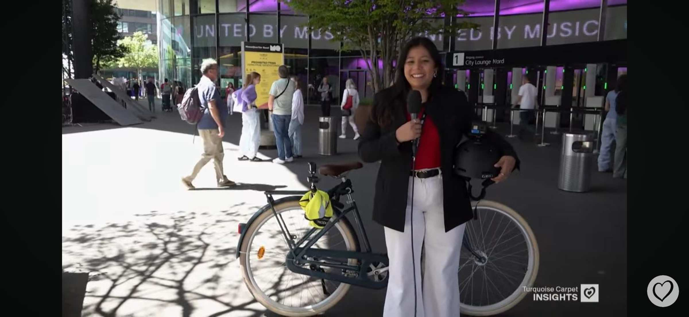
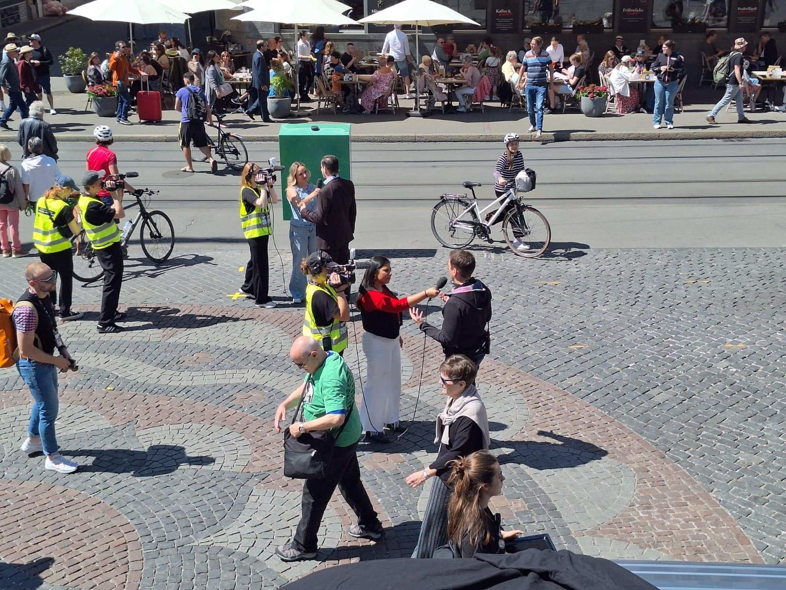

Eurovision Song Contest 2025
Im Rahmen meines Majors Live Communication erhielt ich die Möglichkeit, beim Eurovision Song Contest in Basel mitzuwirken – ein Erlebnis, das für mich lange kaum greifbar war. Bereits zu Beginn des Semesters durfte ich Teil des Konzeptionsteams sein und an inhaltlichen Sitzungen mitdenken, wodurch ich früh Einblicke in die Planung eines internationalen Grossanlasses erhielt.
Am ESC-Wochenende selbst war ich als Moderatorin im ENG-Team im Einsatz und berichtete live vom Turquoise Carpet. Gemeinsam mit meiner Kamerafrau und Assistentin bildeten wir ein eingespieltes Team und begleiteten die Parade-Route sowie Interviews vor Ort. Trotz intensiver Vorbereitung war die Nervosität gross – insbesondere in dem Moment, als mir bewusst wurde, dass rund 50’000 Zuschauer:innen live zusahen.
Als mein Name schliesslich in den Endcredits erschien, wurde mir klar, Teil eines aussergewöhnlichen Projekts gewesen zu sein.
Interesse?
Let's get in TouchBehind the Scenes



Ein Tag am ESC
Livestream Turquoise Carpet
Dokfilm über unsere Arbeit